这几天日元真的气势汹涌，一路强势回升，都不带半点回头和犹豫的。一眨眼的功夫，已经破5了。从7月30日的4.69到今天的5.0，只用了短短7天时间。
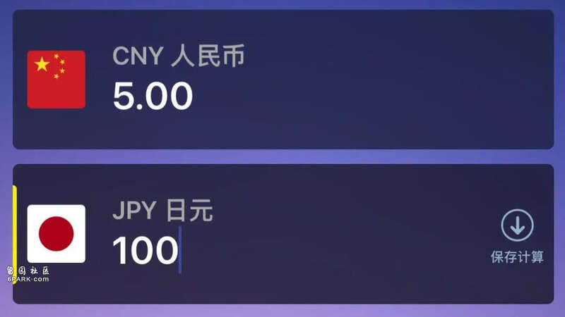
日元外挂火箭速度也不过如此。
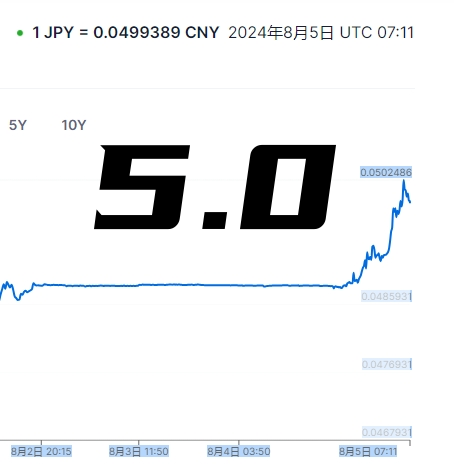
不少人都猜测，这难道是日本又开始玩起了那出背刺队员的老把戏。
日本雅虎的头条第一二名基本上稳稳都是被这俩老大哥占据。
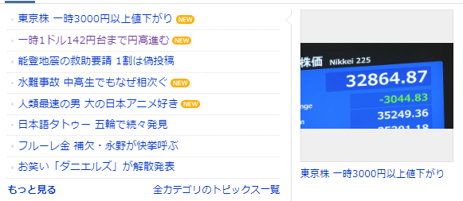
8月5日，日元在外汇市场上继续走强，达到1美元兑142日元的高位。
这是自今年1月初以来，日元在大约7个月中的最强水平。
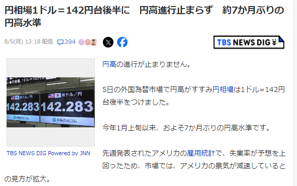
要知道，仅仅在一个月前，也就是7月初，那时1美元甚至能够兑换接近162日元。
上周公布的美国就业报告显示美国失业率高于预期，导致市场上越来越多的人认为美国经济正在放缓，大家都为美国的经济前景担忧。
还有很多人认为，美联储可能会加快降息步伐，日元继续买入和卖出美元，以期待美日利差缩小。
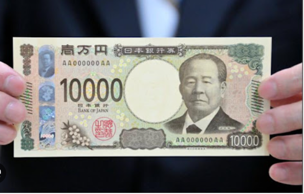
随着日本央行将利率上调0.25%，这个加息决策通常会直接作用于日元汇率。加息意味着资金的使用成本上升，有可能吸引更多的国际资金流入日本，进而也推动日元的升值。
另一方面，美国联邦储备委员会将在9月份开始降息，以及美国和日本之间的利率差距缩小，日元汇率很可能会朝着原先的汇率水平迈进。
不过很多日本民众认为日本央行此次的加息操作实在是来得太晚了，时机上也很差。
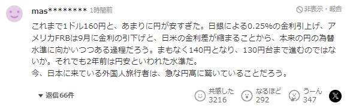
迄今为止，1美元兑160日元的汇率真的是过于疲软了。随着日本央行将利率上调 0.25%，美国联邦储备委员会将在9月份降息，以及美国和日本之间的利率差距缩小，日元汇率很可能会朝着原先的汇率水平迈进。它很快就会达到140日元，并可能升至130日元的水平。即便如此，这也是两年前人们所说的日元疲软水平。来到日本的外国游客一定会对日元的突然升值感到惊讶。
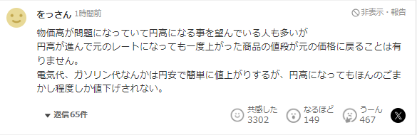
日本的物价高是一个问题，所以许多人希望日元升值。但即使日元升值到原来的汇率，曾经上涨的商品价格也不会回到原来的价格。当日元疲软时，电价和汽油价格很容易上涨，但即使日元升值，价格也只是在欺骗性的程度上降低。
我们就来看一下，日元贬值和升值到底对居住在日本的人们有着什么样的影响。
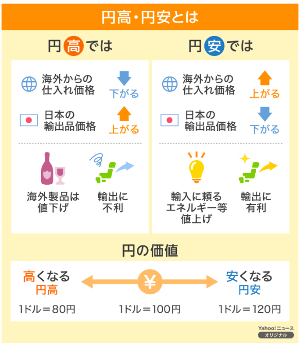
当日元高时
从海外输入商品的价格就会下降。而从日本输出商品的价格就会下降。直接影响就是海外商品价格会下跌，比如与我们息息相关的汽油价格也会下来。但是这把双刃剑对于日本卖出去的商品却因为涨价而有不利影响。
当日元低时
从海外输入商品的价格就会上升。而从日本输出商品的价格就会下降。直接影响就是海外商品价格会上升，比如日本缺乏的能源类，汽油等价格上涨；不过对于日本产品的输出却很有利。
几家欢乐几家愁，一边是日元的强势升值，另一边日本股市却迎来了历史性大跌。
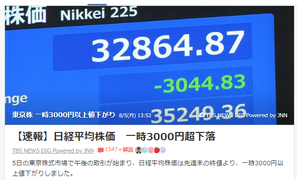
8月5日下午，东京股市开始交易，日经平均指数较上周末的收盘价一度下跌逾4200多日元。这是交易时段有史以来最大的跌幅，超过了1987年10月 “黑色星期一 “以来的跌幅。
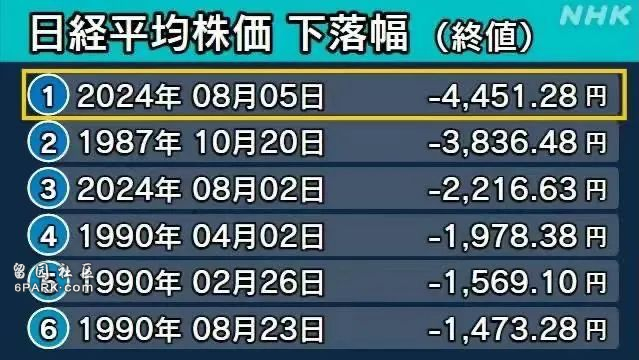
市场在一天之内的跌幅超过11%，远低于年初以来的低点33,288日元。
市场参与者认为，这是因为人们越来越担心美国经济陷入衰退，日元进一步升值，一度触及1美元兑142日元的水平，导致”恐慌性抛售”。
日本雅虎也做了一份关于“经济趋势的民意调查”，在参与调查的21，859人中，74.5%的人认为经济会变得更糟糕。只有2.5%的人认为经济情况会越来越好。
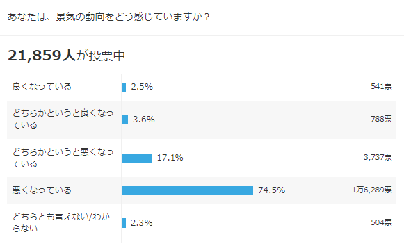
日本综合研究所的专家石川智久说，“虽然5日上午市场有止跌迹象，但下午就出现了恐慌性抛售。年初以来的所有利好都消失了，现在的情况确实是崩盘了。然而，过去几天的跌势已经到了极致，有迹象表明人们希望尽快找到底部。现在是投资者耐心等待的时候了。那些已经开始投资储蓄账户的投资者可能会担心，但由于股价已经下跌，他们下次购买认购股票时会以较低的价格购买，由于平均购买价格较低，他们更有可能在下次上涨的时机获利。对其他投资者来说，这也是一个机会，可以买到以前太贵而买不到的股票。一旦目前的跌势平息，投资价值被低估的股票就显得尤为重要。”
除了股票大跌，就连加密货币都来凑这场狂跌大戏。
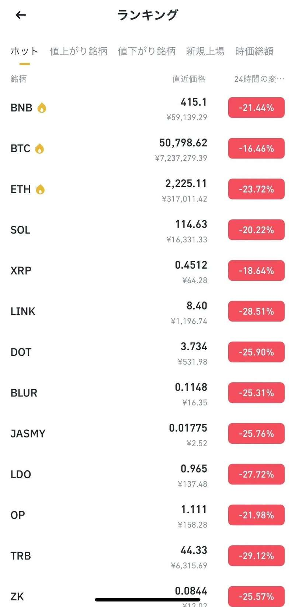
日本网友的内心是崩溃的。
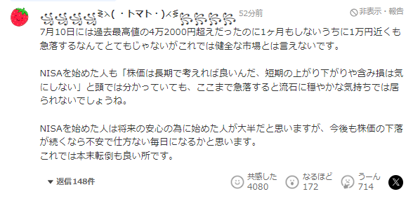
市场在7月10日创下4万2000多日元的历史新高后，在不到一个月的时间里暴跌近1万日元，这是不太健康的。即使是那些创办了NISA的人心里也明白，他们应该从长远考虑股票价格，而不是担心短期的涨跌或未实现的损失，但当市场暴跌到这种程度时，就很难保持冷静了。我想，当初入手NISA的大多数人都是为了今后安心，但如果今后股价继续下跌，我想他们每天都会焦虑不安。这就本末倒置了。
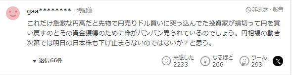
由于日元急剧升值，在期货市场上抛售日元买入美元的投资者纷纷减少损失，回购日元，股票也被纷纷抛售，以获得资金。根据日元的走势，日本股市明天可能无法止跌。我也是这么认为的。
日元的大涨和股票的大跌真的是几家欢乐几家愁，对于想要来日本投资和留学的人群来说，日本破5后，各方面的成本都会增加。但相较几年前，依然还是很利好的时机。
要知道，现在日本的房产是国人最青睐的海外资产之一。一项针对中国投资者的调查显示，超过20%的受访者希望将50%以上的积蓄投资于日本房地产。
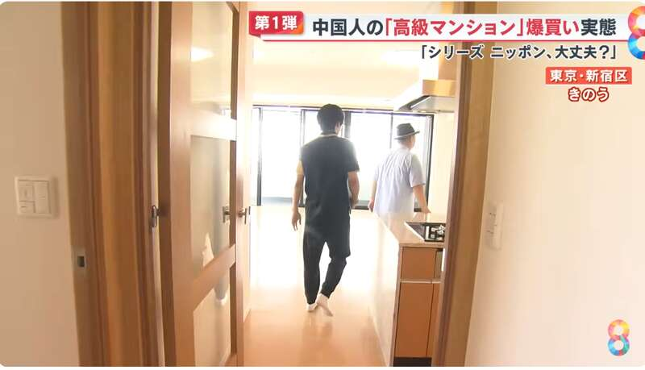
在东京，房产预期收益率约为5%，绝大部分人都认为这是个高利润的好买卖。有的中国投资者用现金购入价值2亿日元的高级公寓眼皮都不眨一下，也有投资者甚至大手笔一挥，买下一整栋楼躺平收租。
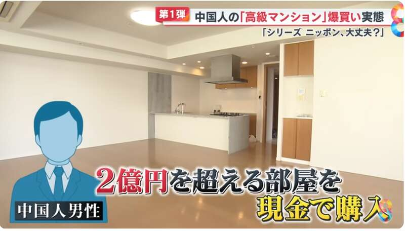
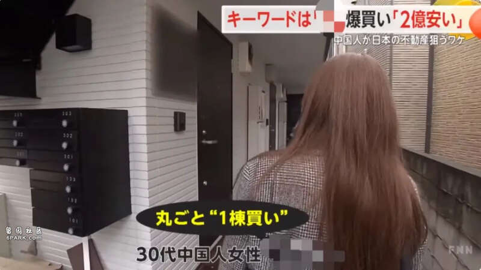
除了爆买日本房产，来日本爆买奢侈品也是国人的最爱，据说，因为日元的下跌，日本已经成为了世界上奢侈品最便宜的国家。
如今，虽然日元已经涨回了5的时代，但是对比日元高峰时期还是相对很友好的。想进入日本的投资房产者和爆买一族应该抓住机遇，留意相关的动态变化，才能在这场历史角逐中稳赢。
4451.28点！日经股指创历史最大下跌点数
据共同网、日本经济新闻日媒等报道，当地时间8月5日，日本东京股市大幅下挫。
日经225指数5日收盘报31458.42点，下跌4451.28点，重挫12.4%，已抹去今年以来所有涨幅。超过了1987年美股暴跌的“黑色星期一”次日的3836.48点，刷新历史纪录。
据悉，日经225指数今天两度触发熔断机制。
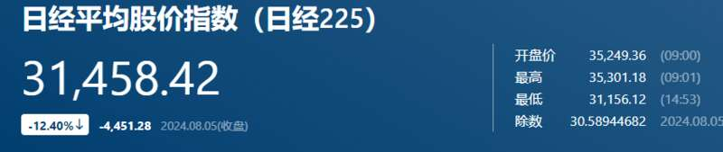
日本经济新闻网